YAMAHA カタログギャラリー
(カタログ画像をクリックすると原寸大のPDFファイルが開きます）
�@1975年3月総合カタログ
オルソダイナミック型登場直後のカタログ
表紙を飾っていることからも力の入れようがうかがいしれる。
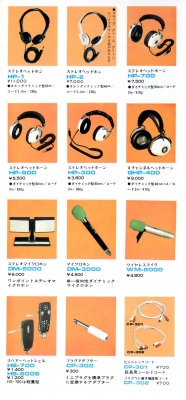
（旧来のモデルと並んだ状態）
�AHP-1/2単独カタログ
当時のヤマハは力の入った製品については単独のカタログをよく作っていた。
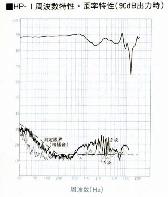
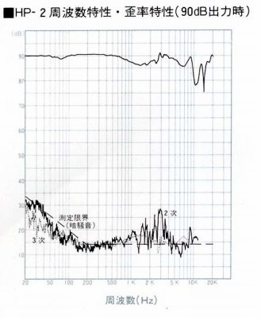
（HP-1/2の周波数特性・歪率特性）
�BHP-1000単独カタログ
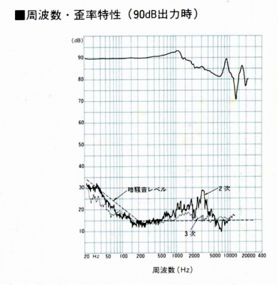
�CYH-5M単独カタログ
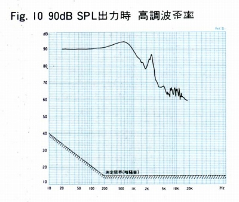
�D1979年4月ヘッドフォンカタログ
�E1979年10月ヘッドフォンカタログ
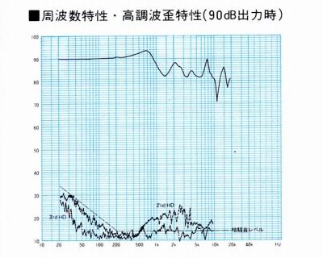
（YH-100の周波数特性・歪率特性）
�F1980年6月総合カタログ
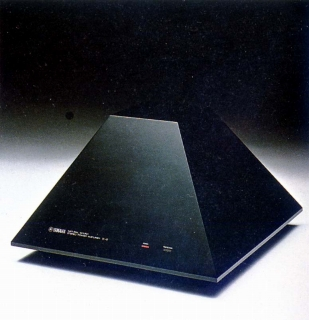
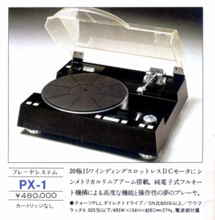
（当時のヤマハ製品はおもしろかった。X電源のピラッミット型アンプB-6と重量級リニアアームのプレイヤーPX-1)
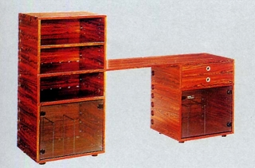
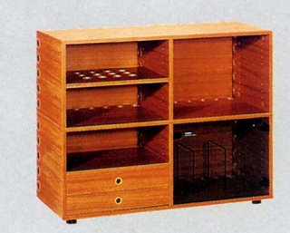
(ベリーニデザインのオーディオラック）
�G1982年10月アクセサリーカタログ
�H1985年9月アクセサリーカタログ
�I1986年11月総合カタログ
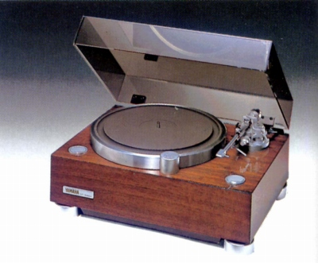
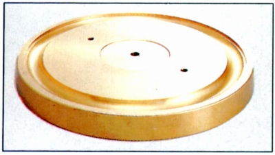
（GTシリーズのトップモデルGT-2000xと重量18KgのオプションプラッタYGT-1)
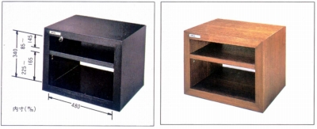
(もともとはGTシリーズのオプションだったが、重量級ラックの代名詞となったGTラック）